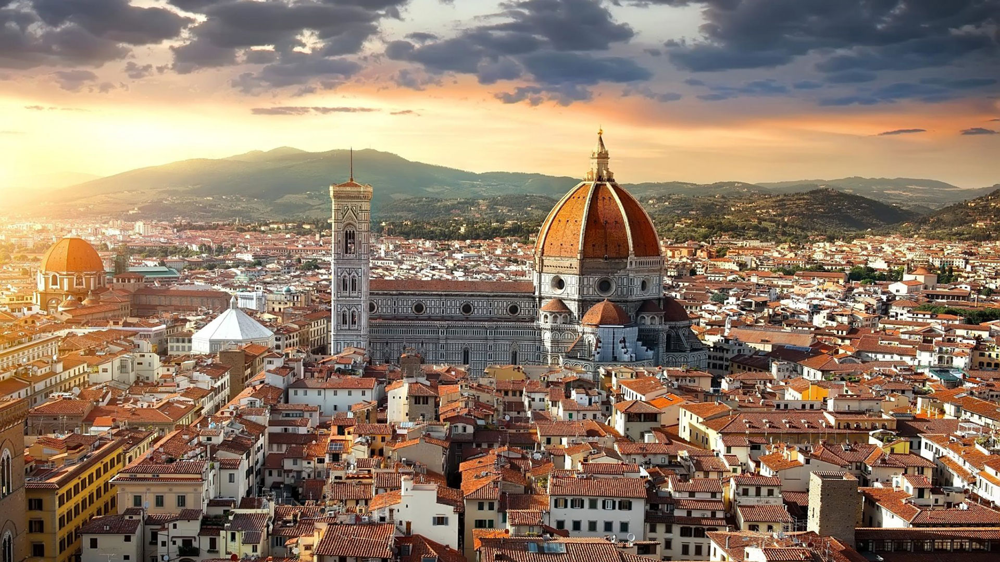
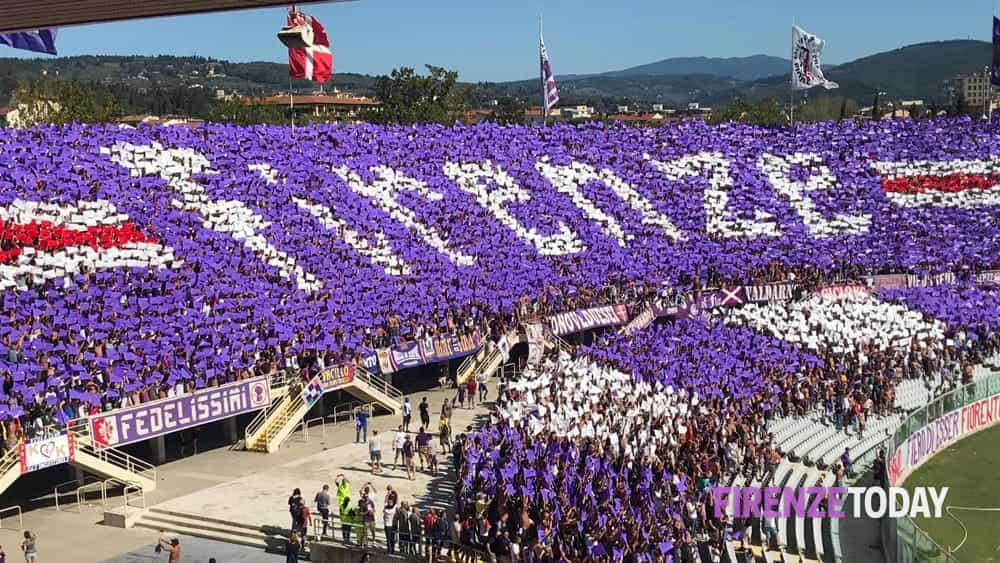
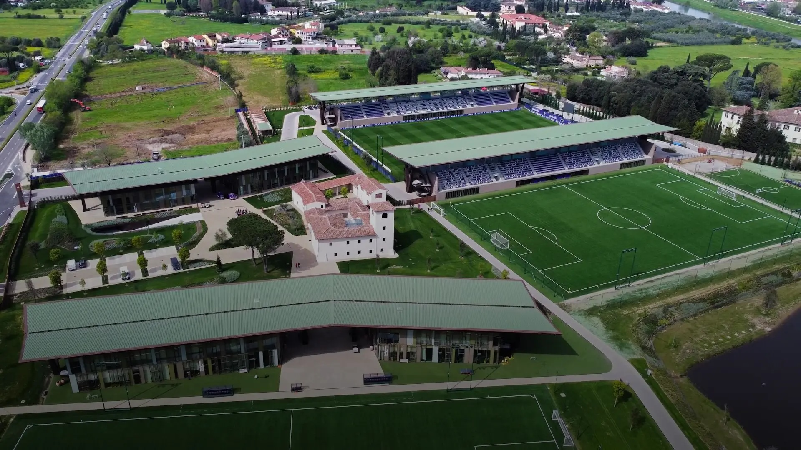

Contesto Socio-Culturale
La cornice dentro cui il lavoro si inserisce.



Firenze non è semplicemente la città in cui gioca la Fiorentina. È il vincolo ambientale più profondo che orienta ogni comportamento, ogni percezione, ogni aspettativa dentro e fuori dal campo. Comprendere Firenze significa comprendere il tifoso, il giocatore che vi si trasferisce e il tipo di calcio che questa città tollera o esige.
Imprinting culturale chiave: a Firenze la bellezza del gesto conta quanto il risultato. Un calcio brutto che vince genera ambivalenza. Un calcio bello che perde genera discussione, non disaffezione totale. È un vincolo tattico reale, non un capriccio.
Il carattere fiorentino
- Orgoglio civico — forte senso di appartenenza a una città superiore.
- Spirito critico — giudizio acuto e diretto; il «bischero» è una categoria morale.
- Anticonformismo — diffidenza verso l'omologazione, valorizzazione del «fare a modo proprio».
- Estetismo pratico — il bello non è ornamento ma requisito: vale nel cibo, nell'artigianato, nel calcio.
- Campanilismo — sospetto verso chi «viene da fuori» senza adottare i valori locali.
- Memoria lunga — gli errori e le promesse non mantenute non vengono dimenticati.
Firenze oggi
La Firenze contemporanea è in tensione tra identità tradizionale e pressione globale. Il turismo di massa ha generato un senso diffuso di «assedio culturale». Il fiorentino percepisce la propria città come un patrimonio da difendere: questo rafforza il localismo e l'identificazione con la Fiorentina.
Parallelamente esiste una componente borghese-intellettuale nel pubblico viola, sensibile all'estetica, alla narrativa, al progetto. Non è solo una piazza operaia: è una piazza che capisce e apprezza la qualità delle idee.
La Fiorentina nasce il 29 agosto 1926 dalla fusione del Club Sportivo Firenze e della Palestra Ginnastica Fiorentina Libertas. Dalla fondazione il club è inestricabilmente legato alla storia urbana di Firenze: una fusione tra ceto aristocratico-intellettuale e anima popolare che ne ha definito il DNA.
Tappe storiche chiave
- 1929 — adozione della maglia viola (scelta deliberata).
- 1955/56 — primo Scudetto.
- 1961 — prima coppa UEFA italiana.
- 1968/69 — secondo e ultimo Scudetto.
- 2002 — fallimento e rifondazione: trauma irrisolto.
- Dal 2019 — era Commisso.
Simboli identitari
- Il viola — colore unico nel calcio mondiale.
- Il giglio fiorentino — legame con la città.
- Il Calcio Storico — radici medievali.
- Il Franchi — patrimonio architettonico.
- Antognoni, Batistuta — figure mitologiche.
Nota operativa: il fallimento del 2002 è una ferita ancora presente. Ogni volta che la società appare «lontana», quel trauma riaffiora. Il legame con la storia deve essere esplicito e autentico, non retorico.
Il Calcio Storico Fiorentino
Praticato dal 1530 in Piazza Santa Croce, il Calcio Storico modella un'idea di gioco come lotta autentica per onorare la propria appartenenza. Il calciante del 1530, per l'ultras della Fiesole, è la stessa figura del calciatore moderno. La posta in gioco non è mai solo sportiva.
Il manifesto non è una campagna marketing. È un atto di posizionamento identitario che riprende fili profondi della cultura fiorentina e li traduce in linguaggio contemporaneo.
«Il Manifesto è l'affermazione dell'identità del Club, delle sue radici più profonde, ma è anche la dichiarazione di un impegno: quello a far sì che il calcio dei Viola sia sempre distintivo, autentico, vicino alle persone, espressione della bellezza della città di Firenze e dello spirito anticonformista e passionale dei fiorentini.» — ACF Fiorentina, Manifesto ufficiale
I quattro pilastri — lettura operativa
- Autenticità e unicità — non imitare le grandi; esprimere la propria identità specifica.
- Diversità orgogliosa — essere alternativi ai soliti schemi è un valore, non un limite.
- Calcio della gente — prossimità emotiva ai tifosi; calcio sincero, umano.
- Legame con Firenze — la bellezza della città come ispirazione estetica del gioco.
Il collegamento tra «Play to be different» e un approccio ecologico non è forzato: è strutturale. La squadra come ecosistema che esprime la propria unicità, come Firenze ha sempre fatto nella storia.
La tifoseria viola è strutturata attorno a una concezione identitaria del tifo che fonde orgoglio cittadino, memoria storica e giudizio morale. Capire questa tifoseria significa anticiparne i comportamenti.
La Curva Fiesole
Nata alla fine degli anni '60, apartitica — «né di destra né di sinistra». Tre gruppi: Ultras Viola (1973, fondati da Stefano «il Pompa» Biagini), Collettivo Autonomo, 1926. Per gli ultras il calciatore non è un professionista: è il «calciante del 1530», chi gioca e lotta per la città.
Rapporto con la proprietà
Rottura aperta nel 2025: cessioni reiterate di giocatori simbolo, dimissioni di Palladino gestite in modo «arrogante» e la frase di Commisso («i tifosi non sono solo quelli della Curva Fiesole») percepita come disprezzo.
Rischio concreto: la tifoseria entra nel 2026/27 con fiducia storicamente bassa. Il clima di accoglienza non sarà automatico: va guadagnato con comportamenti coerenti, non con comunicati.
Il tifoso medio
- Esigente — aspettative alte, sempre.
- Competente — distingue qualità da risultato.
- Emotivamente investito.
- Fedelissimo se sente rispetto autentico.
- Memoria lunga.
Non perdona mai
- Mancanza di impegno.
- Arroganza e distanza.
- Cessioni a club rivali.
- Calcio anonimo.
- Promesse non mantenute.
Opportunità e rischi
- Un calcio coraggioso e bello trova una piazza straordinariamente reattiva e generosa.
- Il cambio ciclo è una finestra di credito iniziale: la tifoseria aspetta di essere sorpresa.
- Un gesto autentico di prossimità vale più di dieci vittorie.
- La stagione 2025/26 è stata traumatica: la piazza è ferita ma non spenta.
- La fiducia della piazza va conquistata sul campo, sin dal primo giorno — e questa tifoseria non dimentica.
- La curva è in conflitto con la proprietà: la continuità col passato verrà sanzionata.
La stagione 2025/26 è stata la peggiore nella storia recente: 4 pareggi e 0 vittorie nelle prime 10 giornate, ultima in classifica, tre allenatori. Il 16 gennaio 2026 muore il presidente Rocco Commisso. Vanoli ha realizzato una salvezza «da impresa», chiudendo al 15° posto.
Il nuovo assetto
- Presidente — Giuseppe B. Commisso (dal 27 gennaio 2026).
- Direttore Sportivo — Fabio Paratici, prima stagione.
- Direttore Generale — Alessandro Ferrari, confermato.
- Allenatore — Fabio Grosso, contratto biennale.
Il progetto Grosso
Squadra più dinamica, intensa e moderna. Principi di gioco chiari, freschezza atletica, modulo 4-3-3 con esterni offensivi rapidi e tecnici. Sostenibilità finanziaria come vincolo.
Finestra strategica: nuovo presidente, nuovo DS, nuovo allenatore dopo una stagione disastrosa. La piazza vuole essere ri-sedotta. Il progetto non deve solo essere buono: deve essere vissuto in modo coerente con i valori della città.
Sfide strutturali
- Budget in definizione con la proprietà.
- Linee guida da definire — contesto fluido.
- Spogliatoio da ricostruire culturalmente.
- Franchi in ristrutturazione: atmosfera compromessa.
- La stagione appena conclusa crea le condizioni per un progetto di rinascita.
Il manifesto societario e la nostra filosofia non sono due cose separate da affiancare. Risuonano sulla stessa frequenza.
Il nostro modello non deriva dal manifesto: lo abita dall'interno. La frequenza è la stessa. Il linguaggio è il nostro.
Questo contesto non è solo scenografico. È il sistema di vincoli su larga scala che orienterà ogni decisione metodologica, relazionale e comunicativa della stagione.
Priorità per il lavoro con la squadra
- Identità chiara — costruire una riconoscibilità di gioco autentica è la condizione per guadagnare credito nella piazza.
- Prossimità umana — i giocatori devono sentire e trasmettere il legame con Firenze, non come obbligo retorico ma come comprensione autentica.
- Spogliatoio come ecosistema sano — dopo una stagione di tensioni, la coesione interna è un prerequisito.
- Gestione delle aspettative — allineare sin dall'inizio cosa è realisticamente costruibile, evitando promesse che creino debito narrativo.
- Coraggio tattico — la piazza tollera la sconfitta se percepisce coraggio e intenzione; non tollera la timidezza.
- Evitare la discontinuità simbolica — ogni segnale di «siamo come il passato» verrà letto negativamente.
Connessione con il manifesto
Il manifesto societario è la bussola con cui la proprietà — e implicitamente la piazza — valuterà il lavoro dello staff. Un modello di gioco autentico, riconoscibile, coraggioso e bello è la traduzione calcistica di «Play to be different».
Nota metodologica: l'approccio ecologico trova una corrispondenza naturale con i valori di questa piazza. Calcio come sistema vivo, emergente, autentico — non prescritto, non meccanico — è precisamente ciò che Firenze ha sempre preteso e raramente visto.